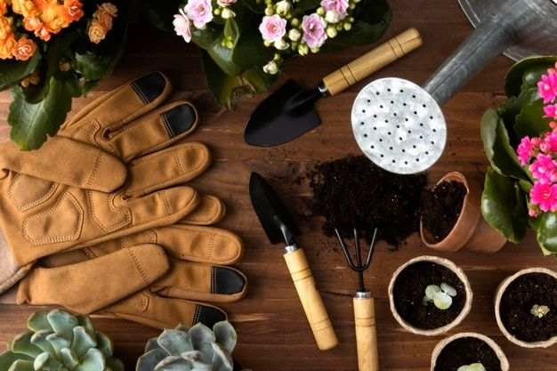

Your One-Stop Shop for All Things Gardening!
From planting essentials to expert tools and expert advice, we have everything you need to cultivate your dream garden, no matter your experience level. We're passionate about gardening and want to help you succeed!
Shop by Category
Watering & Irrigation
Find the perfect watering can, hose, sprinkler system, or moisture meter to keep your plants hydrated and thriving.
Shop WateringPlanting & Tools
Browse our selection of shovels, trowels, gloves, pruners, and other essential gardening tools to make working in your garden a breeze.
Shop ToolsPlant Food & Soil
Nourish your plants with our wide range of fertilizers, potting mixes, soil amendments, and pest control solutions to keep them healthy and flourishing.
Shop Plant FoodGarden Décor
Add a touch of personality to your outdoor space with our stylish garden ornaments, planters, and garden furniture to create a garden getaway you'll love.
Shop DécorMore Gardening Resources
We're here to help you on your gardening journey, from seed to harvest! Here are some additional resources to explore:
- Planting Guides & Calendars: Find detailed instructions and recommendations for planting various vegetables, flowers, and herbs based on your climate zone.
- Seasonal Gardening Tips: Learn expert advice on what to plant, how to care for your plants, and tackle common gardening challenges throughout the year.
- DIY Garden Projects: Discover creative and inspiring ideas for building raised garden beds, trellises, and other garden features to enhance your outdoor space.
- Local Gardening Resources: Connect with local gardening clubs, workshops, and extension offices for personalized advice and support specific to your region.
Featured Products
Premium Pruning Shears
Make precise cuts with these high-quality pruning shears, crafted from durable steel and featuring comfortable grips. Ideal for shaping your plants and promoting healthy growth.
Shop Now €24.99Organic Potting Mix
Give your plants a healthy start with this nutrient-rich, organic potting mix. Formulated with coconut coir, peat moss, and worm castings for optimal drainage and aeration.
Shop Now €9.99